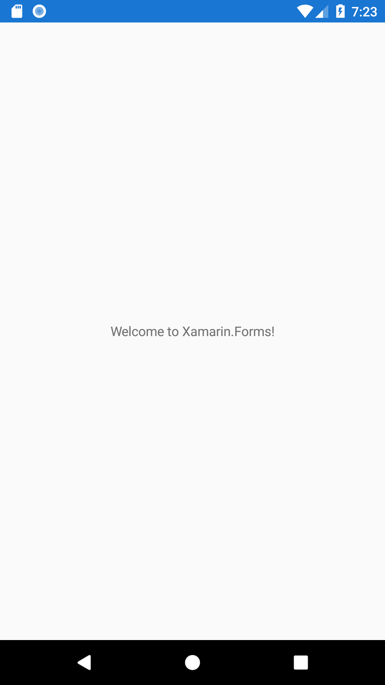

Today we're going to look at creating our TODO application using Xamarin Forms. Xamarin Forms is a cross platform framework build on the .NET stack
that allows for massive code re-use across platforms. It allows us to share both the application logic and the UI code between multiple target
platforms (mostly). There are some exceptions for truly native behavior, of course, like Notifications (which we won't get into today) and platform-specific
elements like the Android Floating Action Button (we'll talk more about that later in this post). For now let's just get started and see what we get out of
the box.
Note: All of my steps are using Visual Studio 2017 Community on Windows. Your mileage may vary if you work on a different edition of VS or on Visual Studio for Mac.
Tools and Environment
We can develop for Xamarin Forms on either a PC or a Mac. On PC we would use Visual Studio (I'm using Visual Studio 2017 Community)
and on Mac we would use Visual Studio for Mac. For Android development, the installers for Visual Studio will install
all additional dependencies, like the Android SDK, emulators, Java, etc. iOS setup can be a little trickier: no matter which OS you develop on, you'll
need a Mac with XCode installed. If you're developing on a Windows machine, Visual Studio will connect to the Mac for iOS compilation. This is needed
because Apple requires a Mac to compile iOS applications.
In addition to Visual Studio, I would also recommend installing Android Studio. This isn't required, especially for quick prototyping, but it has
better tools for creating/managing emulators and for managing the SDK.
With all this installed, we can now start building our app!
Hello World
The first thing we'll do is create a new app project and see what Xamarin Forms gives us out-of-the-box. We open Visual Studio and select File->New Project.
This opens a dialog where we'll select Installed->Visual C#->Cross-Platform->Mobile App (Xamarin.Forms) and name our solution "TodoXamarinForms".
Next we're asked what platforms we want to target and what type of shared project we want. We'll deselect Windows so we only create Android and iOS
projects, and we'll select .NET Standard.
Visual Studio will create our solution with 3 projects: a .NET Standard library (TodoXamarinForms), an Android project (TodoXamarinForms.Android),
and an iOS project (TodoXamarinForms.iOS).
Most of our work will be done in the .NET Standard library, with only minor ventures into the other projects for platform-specific work. Now let's run
our app and see what we have! Make sure either the iOS or Android project is set as your startup project (it should be listed in bold) and
either hit the green 'play' button or the F5 key. This will launch your emulator (simulator if iOS) and deploy the app.

Out of the box we have a Hello World app running on both Android and iOS. It's not very exciting yet, but this is where the real fun begins.
Displaying a list of TODO items
The first thing we want to do is define our TODO item. We'll create a new class called TodoItem.cs that has the basic properties we want: Id, Title, and IsCompleted.
Right click on the TodoXamarinForms project and select Add->Class. Name the class and click 'OK'. This creates a basic C# class that we'll add our
properties to
namespace TodoXamarinForms
{
public class TodoItem
{
public int Id { get; set; }
public string Title { get; set; }
public bool IsCompleted { get; set; }
}
}
Now we want to start creating the UI. Xamarin forms uses XAML for UI development, which allows us to use databinding to display our TODO items. To do this, we're first going to create
a View Model class called TodoListViewModel.cs. To save ourselves some time and boilerplate code, we're going to us the MvvmHelpers library.
Right click on the Solution and select Manage NuGetPackages for Solution. Search for Refractored.MvvmHelpers and install it on all projects.
Now we'll create our View Model. Follow the same steps we used to create TodoItem and add one property: TodoList. Then subclass BaseViewModel.
using MvvmHelpers;
using System.Collections.ObjectModel;
namespace TodoXamarinForms
{
public class TodoListViewModel : BaseViewModel
{
public ObservableCollection TodoList { get; set; }
}
}
The final thing we want to do for now is to create a default list of Todo items so we have something to display. We'll start by hard-coding a few
items.
...
public ObservableCollection TodoList { get; set; } = new ObservableCollection
{
new TodoItem { Id = 0, Title = "Create First Todo", IsCompleted = true},
new TodoItem { Id = 1, Title = "Run a Marathon"},
new TodoItem { Id = 2, Title = "Create TodoXamarinForms blog post"},
};
...